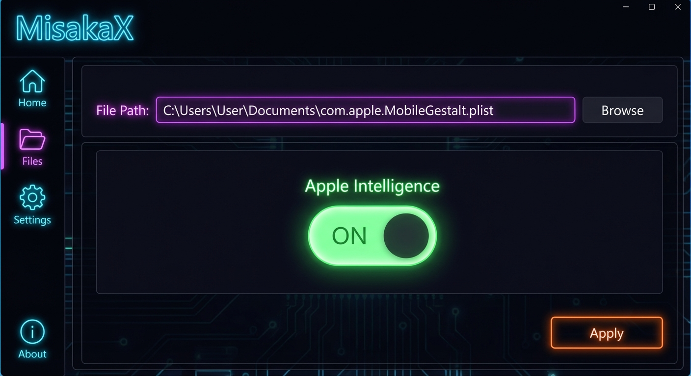
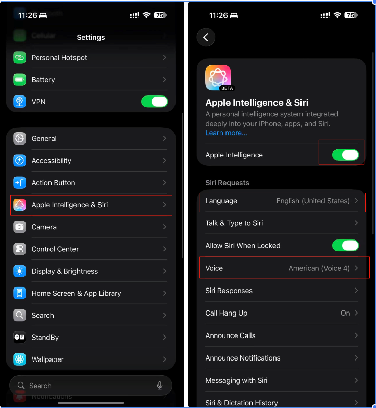

🛠️ 准备工作
-
📱
设备要求： iPhone 15 Pro / Pro Max 或更新机型（支持 AI 的设备）
-
⚙️
系统版本： 手机系统在iOS /iPadOS 16.0 - 26.1 & 26.2 beta 1
-
💻
电脑： Windows 或 Mac
-
💾
数据备份： 建议进行 iTunes/Finder 完整备份
-
🆔
Apple ID： 准备一个美区 Apple ID
-
🔍
关闭查找： 操作期间需关闭“查找我的 iPhone”
🚀 操作步骤（下面有视频教程）
简单设置
1. 手机设置里，查找手机关闭
2. 语言与地区 改美国并且关闭定位
3. 手机语言设置为英语
修改配置文件
1. 在电脑上新建一个 TXT 文本文件，粘贴刚刚复制的 NSS 文件内容。
2. 修改内容 (两处)：
将 <string>CH</string> 中的 CH 改为 LL (有两处，都要改)
将 <string>LL/A</string> 中的 LL 改为 CH
3. 保存并将文件重命名为：com.apple.MobileGestalt.plist
使用 Misaka 修改
1. 下载 Misaka 软件：百度网盘 (提取码: a1jc) 或 GitHub
2. 电脑打开 Misaka，导入 com.apple.MobileGestalt.plist。
3. 只勾选 Apple Intelligence，其他留空。
图书应用 (关键步骤)
1. 连接手机，信任电脑。
2. 卸载手机自带“图书”App，确保登录美区 ID，去 App Store 重新下载“Books”。
3. 开启代理软件 (如小火箭)，关闭启用回退，全局挂美国节点。
4. 打开 Books 搜索 "free"，点击获取免费书。
5. 关键：在 Books 下载转圈的过程中，立即点击电脑 Misaka 上的 Apply 按钮！
6. 手机会自动重启。
检查功能
重启后进入设置，查看是否有 Apple Intelligence & Siri。
如果有，点击进入等待自动下载。确保系统语言和 Siri 语言都设置为 English (US)。
切记不要选中文，否则无法使用。
下载与激活
进入 Apple Intelligence 页面，点击加入/开启。
系统会自动下载组件 (约 5-10 分钟)。
看到完整 AI 面板即代表成功！
体验 AI
短按侧边键即可呼出新版 Siri。
体验 Rewrite, Image Playground, Genmoji, Summaries, Siri 全新能力。
恭喜完成！🎉
视频教程
❓ 常见问题
Q: 开启后能用 ChatGPT 吗？
A: 开启了 AI，需要科学的网络环境，即可使用 ChatGPT。
Q: 会影响保修吗？
A: 修改系统文件理论上会影响保修。如果在去售后前能恢复原状，不受影响。
Q: 失败了怎么办？
A: 如果遇到白苹果或无限重启，请进入 DFU 模式连接电脑，使用 iTunes/Finder 刷机恢复系统（数据将丢失，除非有备份）。